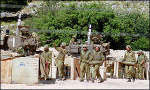
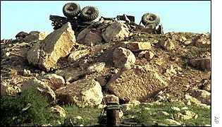

Defaced by LinuxLover
 
Israel : What do you want ? .. War ?!! Hands off all arabs !!!
Greetingz Admin, you had many backdoors on your system, some of them were cleaned ... *.htm* , *.jpg , *.gif and other extensions were deleted, some files were moved to other paths , others were renamed .. you should prepare for a big restore step ... for more details : LinuxLover@hackermail.com
Greetingz to : SLACKo, the Realist, PROJECTGAMMA and me LinuxLover :)
Special thanks to muslim-guy.